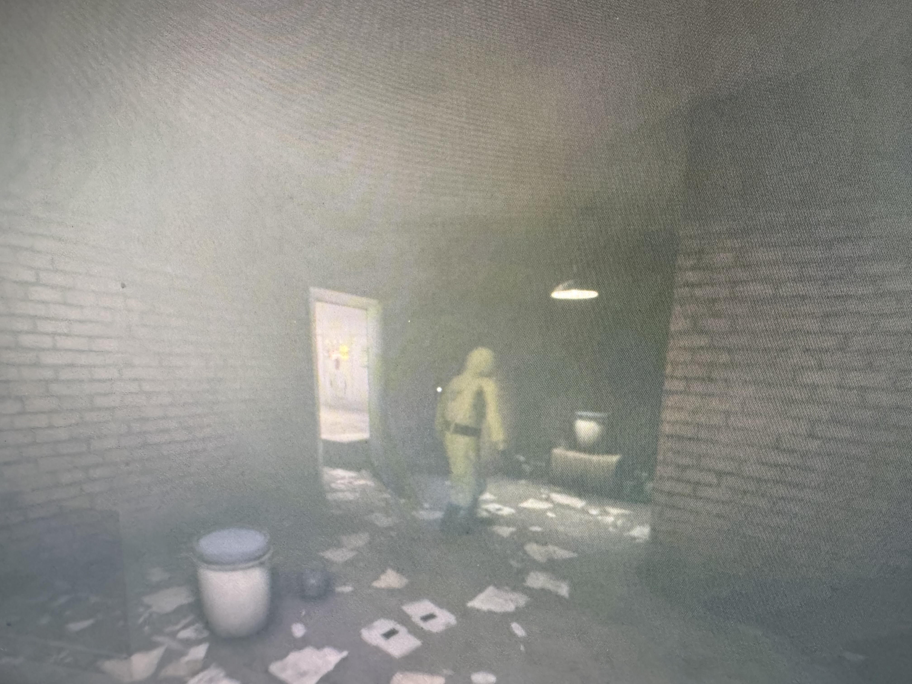
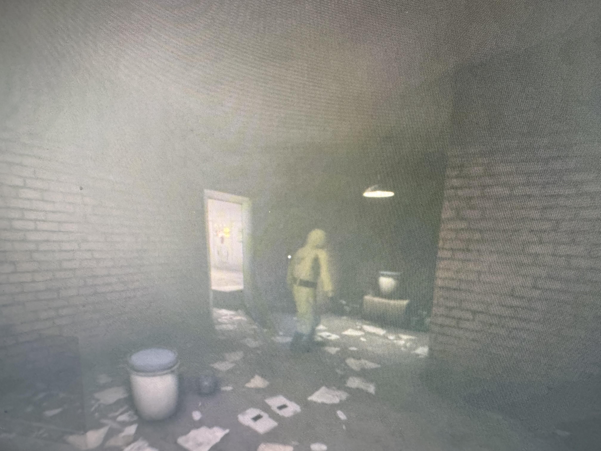
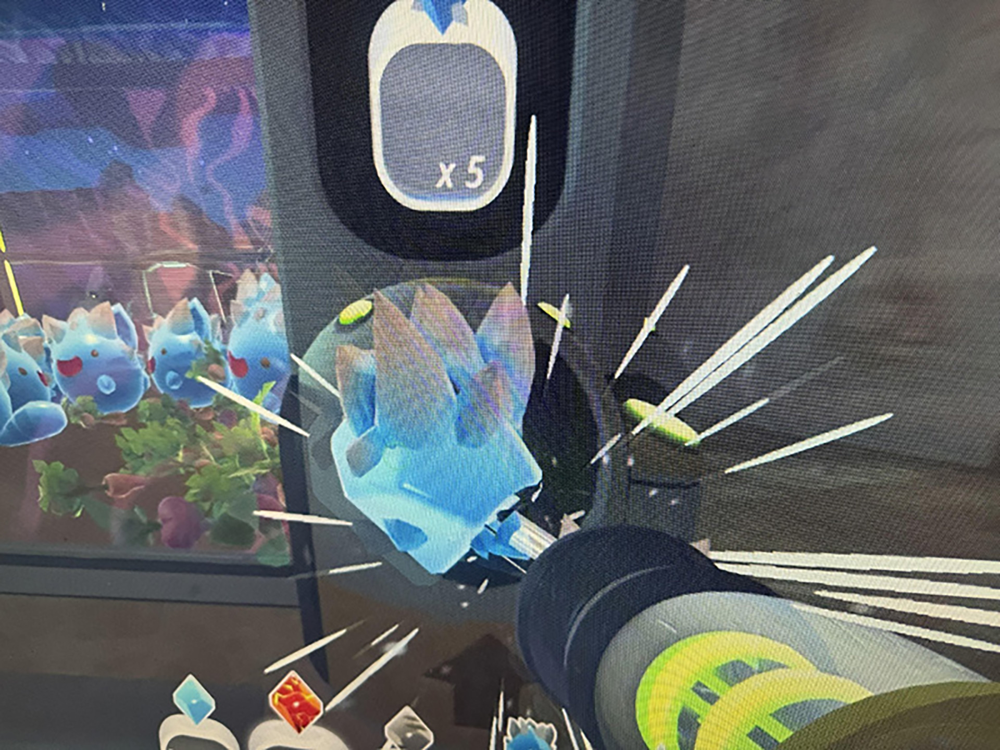
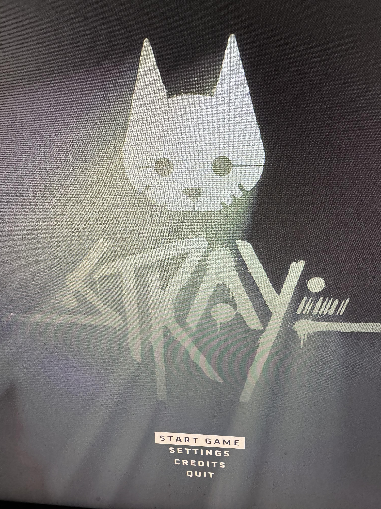
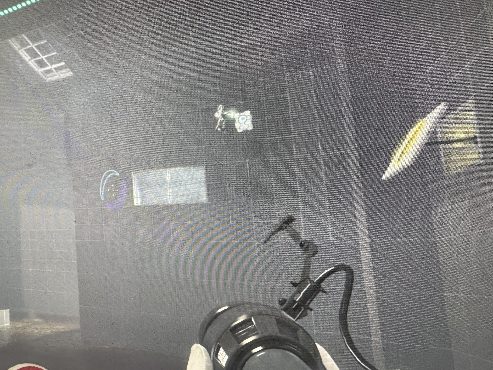
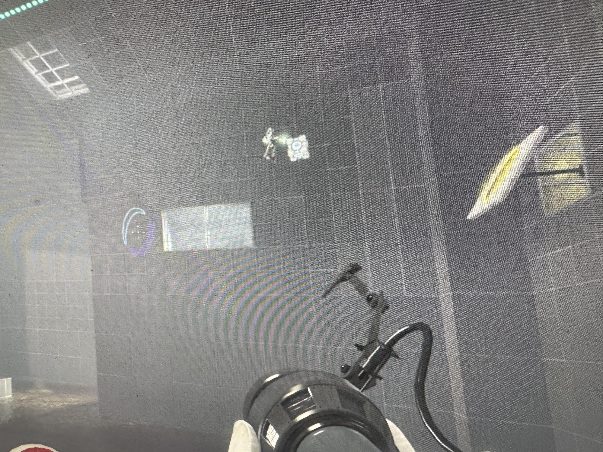
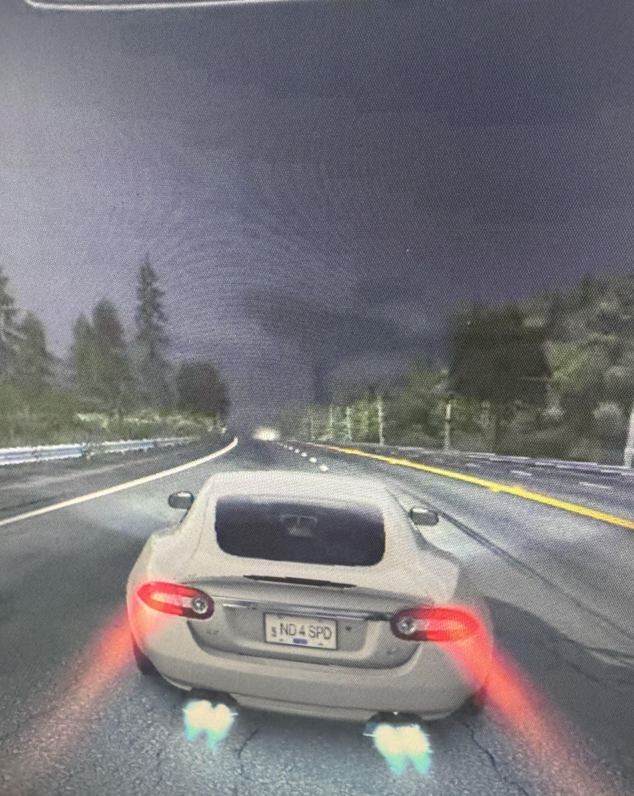
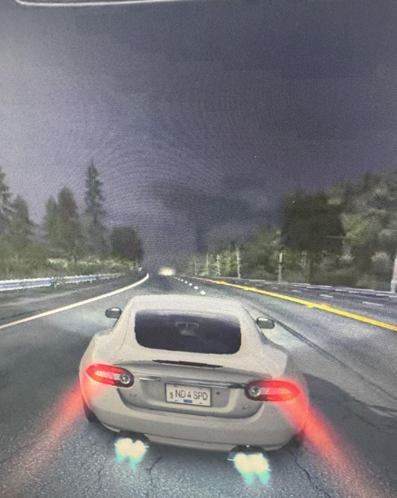

Lethal Company


Recommended Specs
CPU: Intel Core i5-7400 | AMD Ryzen 5 1400
GPU: NVIDIA GeForce GTX 1050 | AMD R9 270X
OS: Windows 10/11
Storage: 1GB
RAM: 8GB
Platforms
PC Only
What is this game about?
Lethal Company is a horror co-op survivor game, your goal is to meet the quota by collecting items and scrap from abandoned moons with the challenge of not getting killed by entities, some are passive but most of them are hostile. Each round gives you 3 chances to meet the quota, if you miss the required amount, then the game is over. This game has proximity voice chat, with the effects of echo and other effects depending on which area you are at. This game can be modded to add cheats to make the game easier or to add extra content, although you may need better computer components to run the mods depending on how much they change the game. this game can be played with 1-4 players.
Link
https://store.steampowered.com/app/1966720/Lethal_Company/
Escape the Backrooms
 

Recommended Specs
CPU: Intel Core i3
GPU: NVIDIA GeForce GTX 650
Storage: 10GB
OS: Windows 10/11
RAM: 8GB
Platforms
PC Only
What is this game about?
Escape the backrooms is a horror survival exploration game, your goal is to go through as many levels as possible without getting killed by entities. This game has proximity voice chat included, so wonderng off can get you lost and hard to find your teammates. This game can be played with 1-4 players.
Link
https://store.steampowered.com/app/1943950/Escape_the_Backrooms/
Slime Rancher

Recommended Specs
CPU: Any CPU with 2.2GHz Dual Core or higher
GPU: Any GPU with 512MB of VRAM or higher
OS: Windows 10/11
Storage: 1GB
RAM: 4GB
Platforms
PC, Nintendo Switch, PlayStation 4/5, Xbox One, Xbox Series X|S, Android
What is this game about?
Slime Rancher is a first person sandbox game set on another planet thousands of light years away from Earth, your goal is to collect slimes, grow crops, harvest resources and explore. You need to collect plorts to sell to the Plort Market, this is how you collect money to upgrade your equipment and home area. This is a single player game, but there is a mod to play multiplayer called SRMP. With the mod installed, one world can be played with up to 16 people.
Link
https://store.steampowered.com/app/433340/Slime_Rancher/
TF2 (Team Fortress 2)


Recommended Specs
CPU: Intel Pentium 4
GPU: NVIDIA GeForce 9800GT
OS: Windows 10/11
Storage: 15GB
RAM: 1GB
Platforms
Windows, PlayStation 3, Xbox 360
What is this game about?
Team Fortress 2 is a free to play first person shooter attack and defense game, there are two teams called BLU and RED. Blu's goal is to take RED's control points, RED needs to deffend those control points. Each of the nine character has different classes and abilities, some of them being on the offense class and some others being in the defense class. There are 5 game types of attack and defense, with the classical control point mode and some modes with a bit of a twist. This game can be played with 32 people in one lobby, you can play with up to 5 friends in one party. This game has voice chat, but you need to pay money to get access to voice chat so some applications like Discord are recommended to chat with friends.
Link
https://store.steampowered.com/app/440/Team_Fortress_2/
Stray

Recommended Specs
CPU: Intel Core i5-8400 | AMD Ryzen 5 2600
GPU: NVIDIA GeForce GTX 780 | AMD Radeon R9 290X
OS: Windows 10/11
Storage: 10GB
RAM: 8GB
Platforms
PC, PlayStation 4/5, Xbox One, Xbox Series X|S
What is this game about?
Stray is a single player third person cat adventure game, set in a decaying and infested cybercity under the earth's surface. Your goal is to survive and find your way back to the surface with your companion B-12. You have to do some side missions in order to get out of the cybercity, it may sound like a waste of time, but it'll make the game a lot easier when you complete them, some are story based and some art not.
link
https://store.steampowered.com/app/1332010/Stray/
Portal 2
 

Recommended specs
CPU: Any CPU with 3.0GHz Dual Core or higher
GPU: NVIDIA GeForce 7600
OS: Windows 10/11
Storage: 8GB
RAM: 2GB
Platforms
PC, PlayStation 3, Xbox 360, Nintendo Switch
What is this game about?
Portal 2 is a single player and multiplayer puzzle game. Your goal is to solve each test chamber with the help of using portals and other tools to help you. You can play by yourself, or you can play with a friend. When playing by yourself, you are set in a story mode campaign, your goal is to reach back to the surface with the added challenge of puzzles, it gets harder to solve the test chambers as you progress through the story. This goes the same for multiplayer except you get to play with a friend, although there is no story in multiplayer mode.
Link
https://store.steampowered.com/app/620/Portal_2//
Need for Speed: Hot Pursuit (2010)
 

Recommended Specs
CPU: Intel Core 2 Duo | AMD Athlon X2
GPU: NVIDIA GeForce 6200
RAM: 4GB
Storage: 8GB
OS: Windows 10/11
platforms
PS3, Xbox 360, Wii, PC
What is this game about?
This game has two ways you can play the game, you can be a cop or a racer. Each side has it's own missions and plots, your goal as a cop is to take down the suspects and other calls that have been assigned to you. As a racer, your goal is to run away from the cops, win races and collect bounty. Both missions have 3 types of medals, gold, silver and bronze, this is to grade on your performance for each mission, bronze is the minimum to complete the mission. Leveling up will grant you new cars to drive. There is a multiplayer mode, although the servers may be underrated as this game has a remaster released in 2020.